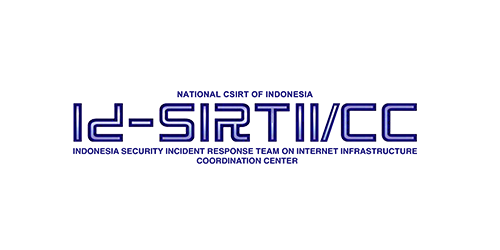

Pada era 2020-2025, dunia siber (cyberspace) telah berevolusi menjadi domain strategis utama ("domain kelima") yang setara dengan domain konvensional seperti darat, laut, udara, dan ruang angkasa.
Ia bukan sekadar alat komunikasi, melainkan arena konflik geopolitik dan militer yang sesungguhnya.
Ruang lingkupnya mencakup seluruh ekosistem digital, mulai dari infrastruktur kritis (listrik, energi, transportasi), media sosial, cloud computing, sistem IoT,
hingga jaringan 5G yang bersifat dual-use membawa kemajuan sekaligus kerentanan baru.
Karakteristik fundamental yang membuatnya unik dan menantang adalah:
Tidak terbatas secara geografis.
Sangat mudah berubah (malleable) dan dinamis.
Sulit dikendalikan dengan mekanisme tradisional akibat
kecepatan dan fluiditasnya.
Dalam periode ini, skema ancaman siber menjadi semakin kompleks dan beragam, ditandai dengan:
1. Model Bisnis Kriminal yang Canggih: Seperti Ransomware-as-a-Service (RaaS) yang memungkinkan pelaku dengan kemampuan minim untuk menyewa platform ransomware dan melancarkan serangan yang mematikan.
2. Serangan Rantai Pasok (Supply-Chain Attacks): Serangan yang menyasar vendor perangkat lunak (contoh: SolarWinds) dapat menimbulkan dampak sistemik dan meretas ratusan organisasi kliennya secara berantai.
3. Pemanfaatan AI dan Otomatisasi: Threat actor memanfaatkan Kecerdasan Buatan untuk membuat serangan phishing yang sangat personal, malware yang adaptif, bahkan agen otonom (Military AI Cyber Agents) untuk menyerang infrastruktur.
4. Serangan terhadap Infrastruktur Kritis: Sektor vital seperti kesehatan, energi, dan transportasi menjadi target utama, tidak hanya untuk keuntungan finansial, tetapi juga untuk sabotase dan tekanan geopolitik.
5. Kedaulatan Digital dan Disinformasi: Ruang siber menjadi medan "perang kognitif" di mana operasi informasi, propaganda, dan disinformasi digunakan untuk menggoyahkan stabilitas sosial-politik suatu negara.
6. Aspek Regulasi dan Etika: Kompleksitas ancaman ini mendorong perlunya kerangka regulasi dan etika siber yang kuat. Di Indonesia, hal ini tercermin dari perdebatan cyberlaw dan implementasi UU Perlindungan Data Pribadi (UU PDP).
⭐
Sejarah Dan Evolusi
Fase 1: Pra-Sejarah dan Konseptualisasi (1950-an – 1969)
Fase ini meletakkan fondasi teoretis dan teknis untuk internet. Motivasi utamanya berasal dari kebutuhan militer AS selama Perang Dingin untuk menciptakan sistem komunikasi yang tahan rusak (survivable). Dua inovasi kunci yang muncul adalah:
Konsep Time-Sharing: Memungkinkan beberapa pengguna mengakses satu komputer utama secara bersamaan dari terminal yang berbeda, yang merupakan cikal bakal ide jaringan.
Teori Packet Switching: Dikembangkan secara independen oleh Paul Baran dan Donald Davies. Teknik memecah data menjadi paket-paket kecil untuk dikirim secara efisien
ini menjadi tulang punggung teknis internet modern. Proyek ARPA (Advanced Research Projects Agency) Departemen Pertahan AS menjadi motor pengembangannya.
Fase 2: Kelahiran Internet (1969 – 1989)
Fase ini menandai transisi dari teori ke jaringan nyata yang menghubungkan institusi-institusi.
ARPANET (1969): Jaringan praktis pertama yang menggunakan packet switching lahir, menghubungkan empat node universitas. Meski sederhana, ini adalah momen bersejarah.
Protokol TCP/IP (1983): Dikembangkan oleh Robert Kahn dan Vint Cerf, suite protokol ini menjadi "bahasa universal" yang memungkinkan berbagai jaringan yang berbeda saling terhubung. Peralihan resmi ARPANET ke TCP/IP pada tahun 1983 dianggap sebagai hari kelahiran internet modern.
Domain Name System (DNS - 1985): Sistem ini memperkenalkan nama domain (.com, .edu) untuk menggantikan alamat IP numerik yang rumit, sehingga membuat internet lebih mudah diakses oleh manusia.
Fase 3: Komersialisasi dan Web (1990 – 2004)
Fase ini mentransformasi internet dari alat para ahli menjadi fenomena global dan komersial.
World Wide Web (WWW): Diciptakan oleh Tim Berners-Lee di CERN, WWW memperkenalkan tiga teknologi revolusioner: HTML (untuk membuat halaman web), URL (sebagai alamat), dan HTTP (protokol transfer). WWW memberikan antarmuka yang ramah pengguna.
Browser Grafis dan Ledakan Dot-Com: Browser seperti Mosaic dan Netscape Navigator mempopulerkan "berselancar" di web. Era ini menyaksikan kelahiran raksasa digital seperti Amazon dan Google, serta euforia investasi yang dikenal sebagai Dot-Com Boom, yang meski berakhir dengan gelembung pecah, telah membangun infrastruktur digital yang kokoh.
Karakter Fase: Dikenal sebagai era Web 1.0, dimana sebagian besar pengguna adalah konsumen konten yang pasif.
Fase 4: Web Sosial dan Mobile (2005 – 2019)
Cyberspace menjadi personal, interaktif, dan mobile.
Web 2.0: Menandai pergeseran ke web "baca-tulis". Pengguna berubah dari konsumen menjadi pencipta konten secara massal melalui platform seperti Facebook, YouTube, Wikipedia, dan Twitter.
Revolusi Smartphone: Peluncuran iPhone (2007) dan perangkat Android mengubah internet menjadi sesuatu yang portabel. Akses tidak lagi terikat pada meja kerja, tetapi ada di genggaman tangan.
Cloud Computing dan Ekonomi Platform: Layanan cloud (AWS, dll.) mendemokratisasi akses ke komputasi yang kuat. Model bisnis platform (seperti Uber) mendisrupsi industri tradisional.
Dampak Sosial: Fase ini juga memunculkan kesadaran akan masalah kompleks seperti privasi data, disinformasi, dan kekuatan monopoli perusahaan teknologi (Big Tech)
Fase 5: Era Kecerdasan Buatan, IoT, dan Masa Depan Digital (2020 – Sekarang)
Kita sekarang berada di fase di mana batas antara fisik dan digital kian kabur.
Kecerdasan Buatan (AI) Generatif: Kemunculan model seperti ChatGPT merevolusi interaksi dengan mesin. AI kini mampu menciptakan konten teks, gambar, dan kode yang orisinal, bukan hanya menampilkannya.
Internet of Things (IoT) dan 5G: Miliaran perangkat fisik (dari sensor hingga kendaraan) terhubung ke internet, didukung oleh jaringan 5G yang ultra-cepat. Ini mendorong otomatisasi tingkat lanjut di industri dan kota cerdas.
Visi Masa Depan: Metaverse dan Web3: Konsep Metaverse menjanjikan dunia virtual 3D yang imersif. Sementara itu, Web3 yang berbasis blockchain mengusung visi internet terdesentralisasi di mana pengguna memiliki kendali penuh atas data dan aset digital mereka.
Tantangan Keamanan: Dengan kompleksitas yang meningkat, ancaman siber seperti ransomware dan serangan rantai pasok menjadi lebih canggih dan sistemik, menargetkan infrastruktur kritis yang kini sangat terhubung.
Karakteristik Siber
⭐
Dunia Maya (Virtualitas)
Ruang siber adalah ranah yang dibangun dari informasi dan data digital, tidak memiliki wujud fisik yang dapat dipegang. Identitas, aset, dan komunitas di dalamnya ada sebagai representasi digital.
Sifat ini memungkinkan terciptanya pengalaman imersif seperti Metaverse, tetapi juga menjadi celah untuk penipuan dan penyamaran identitas dengan mudah.
⭐
Tanpa Batas (Borderlessness)
Informasi dalam ruang siber dapat melintasi batas-batas geografis dan yurisdiksi negara dalam hitungan detik. Hal ini memfasilitasi kolaborasi global dan perdagangan internasional,
namun menciptakan tantangan kompleks dalam penegakan hukum, regulasi, dan kedaulatan digital, karena pelaku kejahatan dapat beroperasi dari negara yang berbeda.
⭐
Interaktivitas Tinggi
Cyberspace memungkinkan interaksi dua arah yang dinamis dan real-time, baik antar manusia, antara manusia dengan sistem, maupun antar mesin (M2M). Karakter ini mendorong partisipasi
aktif pengguna dalam menciptakan konten (Web 2.0) dan membentuk komunitas online, tetapi juga menjadi saluran efektif untuk penyebaran ujaran kebencian, perundungan siber (cyberbullying), dan kampanye negatif.
⭐
Terdesentralisasi (Decentralization)
Pada dasarnya, internet tidak memiliki otoritas pusat tunggal yang mengendalikannya. Meski perusahaan teknologi besar (Big Tech) memiliki pengaruh kuat, kontrolnya tetap terdistribusi. Sifat ini mendukung kebebasan
berekspresi dan inovasi, namun di sisi lain dapat menciptakan lingkungan seperti "wild west" yang sulit dikendalikan, dimana konten ilegal dan kejahatan siber dapat berkembang.
⭐
Kecepatan dan Skalabilitas
Informasi dan data dapat bergerak dengan kecepatan sangat tinggi dan menjangkau khalayak secara massal dalam waktu singkat (viral). Sistem digital juga dirancang untuk mudah diskalakan guna menampung pertumbuhan
pengguna dan data yang eksponensial. Sifat ini mempercepat inovasi dan diseminasi informasi, tetapi juga mempercepat penyebaran misinformasi, hoaks, dan malware, serta memungkinkan serangan siber seperti DDoS yang memanfaatkan skalabilitas jaringan.
⭐
Paradoks Anonimitas dan Jejak Digital
Pengguna dapat beroperasi dengan tingkat anonimitas tertentu, menggunakan identitas samaran. Anonimitas dapat melindungi privasi dan kebebasan berekspresi kelompok rentan. Namun, secara paradoks, setiap aktivitas online meninggalkan jejak digital yang permanen dan dapat dilacak.
Jejak ini menjadi komoditas berharga yang dapat dianalisis untuk berbagai tujuan, mulai dari personalisasi iklan hingga pengawasan massal, yang menimbulkan ancaman serius terhadap privasi.
Keamanan dan Ancaman
Prinsip Dasar Keamanan
Prinsip Privilege terendah (Principle of Least Privilege - Polp)
Prinsip Privilege Terendah (PoLP) adalah fondasi keamanan siber yang menyatakan bahwa setiap pengguna, akun, atau program hanya boleh diberikan hak akses minimum yang mutlak diperlukan untuk menjalankan tugasnya. Prinsip ini mencegah pemberian akses yang berlebihan.
Manfaat Penerapan Least Privilege ialah :
Meningkatkan Keamanan
Mengurangi Risiko
Mencegah Penyebaran Malware
Mematuhi Regulasi Kepatuhan
Meningkatkan Efisiensi dan Produktivitas
Meningkatkan Transparansi dan Akuntabilitas
Mengurangi Kerentanan Sistem
Selain itu, bukan hanya manfaat yg di dapat dalam menerapkan Least Privilege tetapi ada tantangan yg harus di hadapi juga, contohnya :
Identifikasi Kebutuhan Akses yang Tepat
Penyesuaian dengan Lingkungan yang Kompleks
Resistensi dari Pengguna
Pengelolaan dan Administrasi yang Rumit
Kompatibilitas dengan Aplikasi dan Sistem Legacy
Pemahaman yg Mendalam tentang Hak Akses
Pemantauan dan Audit yg Efektif
Kesesuaian dengan kebijakan dan Regulasi
Prinsip Pembatasan Kekakuan (Principle of Minimal Functionality)
Lapisan pembatas atau perimeter merupakan lapisan selanjutnya pada keamanan siber. Lapisan pembatas ini adalah sebuah pagar yang menghadang hal-hal yang tidak diinginkan untuk masuk ke dalam. Pada sebuah infrastruktur digital, pembatas ini terletak pada elemen yang mengandung akses masuk, seperti email atau jaringan. Firewalls, spam filter, intrusion detection/prevention system (IDS-IPS), dan VPN merupakan beberapa contoh pada lapisan pembatas yang dapat digunakan untuk memisahkan antara jaringan internal Anda dengan jaringan eksternal yang mengandung potensi ancaman.
Prinsip Pertahanan Berlapis (Defense in Depth)
Prinsip Pertahanan Berlapis (Defense in Depth) adalah strategi keamanan siber yang mengandalkan banyak lapisan pertahanan untuk melindungi aset digital organisasi. Inti dari pendekatan ini adalah tidak bergantung pada satu solusi keamanan tunggal, seperti sebuah firewall, melainkan dengan menerapkan berbagai lapisan pertahanan teknis yang saling melengkapi. Hal ini diperkuat oleh proses yang proaktif, seperti manajemen kerentanan yang mencakup penilaian risiko dan pembaruan (patching) secara rutin, serta pelatihan kesadaran keamanan bagi seluruh karyawan agar dapat menjadi garis pertahanan pertama yang efektif. Dengan menggabungkan teknologi, proses, dan manusia, strategi ini memastikan bahwa jika satu lapisan keamanan tembus, masih ada lapisan lain yang dapat menghentikan ancaman, sehingga memperkecil dampak serangan dan meningkatkan ketahanan organisasi secara keseluruhan.
Fail-secure juga dikenal sebagai "fail-locked," mengacu pada prinsip desain di mana perangkat atau sistem default ke status aman atau terkunci saat mengalami kehilangan daya atau kegagalan sistem. Penting untuk dicatat bahwa meskipun sistem fail-secure dapat menjaga keamanan selama kegagalan, mereka berpotensi membahayakan keselamatan dengan membatasi jalan keluar selama keadaan darurat.
Tujuan utama dari penerapan prinsip fail-secure adalah untuk:
Menjaga kerahasiaan (confidentiality) data saat terjadi kegagalan sistem.
Mencegah akses tidak sah (unauthorized access) pada kondisi abnormal.
Memastikan integritas (integrity) data tidak rusak akibat gangguan.
Menolak akses secara default ketika sistem tidak bisa memastikan keamanan.
Prinsip Keadaan Terisolasi (Isolation & Segmentation)
Prinsip Keadaan Terisolasi adalah prinsip dalam keamanan sistem yang menyatakan bahwa sistem harus berada dalam keadaan aman dan terisolasi sampai semua komponen keamanan (seperti otentikasi dan otorisasi) selesai dikonfigurasi dan diverifikasi. Artinya, sebelum sistem siap beroperasi penuh, semua mekanisme keamanan harus sudah aktif. Selama proses booting, pemeliharaan, atau pemulihan, sistem tidak boleh mengizinkan akses yang tidak aman.
Tujuan dari prinsip ini ialah sebagai berikut.
Mencegah akses tidak sah sebelum sistem benar-benar siap.
Melindungi data dan konfigurasi sensitif selama sistem dalam keadaan belum stabil.
Sistem tidak bisa dimanipulasi ketika berada di luar mode operasional normal.
Menegakkan prinsip "secure by default" artinya sistem harus aman bahkan sebelum dijalankan sepenuhnya.
Sebuah sistem bisa berada dalam tiga keadaan utama, yakni Inisialisasi, Operasional, dan Pemeliharaan. Dimana artinya adalah saat Inisialisasi berlangsung maka sistem dinyalakan atau di-boot, pada saat Operasional, sistem berjalan normal, pengguna sudah diautentikasi atau diverifikasi, dan sedangkan pada saat Pemeliharaan sistem sedang diperbaiki atau dipulihkan.
Prinsip Ketidakpercayaan Sistemik (Zero Trust)
Zero Trust adalah prinsip keamanan siber yang menolak asumsi “percaya secara otomatis”. Setiap komponen sistem baik pengguna, perangkat, aplikasi, maupun layanan dianggap tidak terpercaya sampai melalui proses verifikasi yang ketat. Pendekatan ini bertujuan membatasi dampak serangan, mencegah perpindahan ancaman di dalam jaringan, serta memastikan autentikasi dan otorisasi dilakukan secara konsisten di setiap lapisan sistem.
Laporan terbaru dari Forrester dan Gartner menegaskan bahwa Zero Trust menjadi pendekatan yang sangat relevan saat ini karena beberapa faktor utama:
Meningkatnya serangan ransomware yang mampu menyusup jauh ke dalam jaringan tradisional. Zero Trust membantu menghentikan pergerakan lateral ransomware sehingga kerusakan dapat diminimalkan.
Perubahan pola kerja menuju remote work, di mana karyawan mengakses sistem dari berbagai lokasi dan perangkat. Zero Trust memungkinkan kontrol akses ketat tanpa menghambat produktivitas.
Penerapan cloud yang semakin luas membuat batas jaringan tradisional kabur. Zero Trust justru cocok karena tidak bergantung pada lokasi jaringan, tetapi pada identitas dan konteks akses.
Untuk memperkuat keamanan cloud, beberapa elemen zero trust perlu diterapkan secara konsisten, antara lain:
Multi-Factor Authentication (MFA): Menambahkan lapisan verifikasi ekstra agar hanya pengguna yang benar-benar sah yang bisa masuk, meskipun kredensial mereka bocor.
Least Privilege Access: Pengguna hanya diberi akses sesuai kebutuhan tugasnya, sehingga potensi penyalahgunaan akun dapat ditekan.
Micro-segmentation: Memecah jaringan menjadi segmen-segmen kecil dengan batas keamanan yang ketat untuk mencegah malware menyebar dengan cepat.
Continuous Monitoring: Aktivitas pengguna dan aplikasi dipantau secara real-time untuk mendeteksi anomali atau tanda-tanda pelanggaran keamanan sedini mungkin.
Untuk membangun strategi keamanan cloud berbasis Zero Trust, organisasi perlu melakukan beberapa langkah strategis:
Evaluasi aset dan perimeter digital untuk mengidentifikasi data penting dan sistem yang paling perlu dilindungi.
Menyusun kebijakan akses berbasis least privilege sesuai peran dan tanggung jawab tiap pengguna.
Mengadopsi teknologi pendukung seperti IAM, SASE, dan CASB yang dapat membantu mengelola identitas, akses, dan perlindungan cloud secara terintegrasi.
Memberikan edukasi keamanan kepada tim dan karyawan, karena kesadaran manusia masih menjadi garis pertahanan penting.
5. Melakukan audit dan monitoring berkala untuk memastikan kebijakan keamanan tetap berjalan efektif dan mampu menanggapi ancaman baru.
Psikopologi Peretas
Psikopologi Peretas mencakup tentang perilaku, motivasi, dan taktik yang digunakan oleh peretas untuk mencapai tujuan. Sebagai contoh, pengguna komputer sering mengabaikan peringatan keamanan yang muncul pada layar.
Daftar kesalahan umum manusia yang dapat memicu insiden siber antara lain: berbagi kata sandi, membagikan informasi sensitif di media sosial, mengakses situs web mencurigakan, menggunakan media eksternal tidak sah, sembarang mengeklik tautan, membuka lampiran email tidak dikenal, gagal mengamankan perangkat, hingga tidak melakukan pembaruan software. Singkatnya, tanpa kesadaran dan perilaku keamanan yang baik, teknologi secanggih apapun dapat dijebol melalui kesalahan pengguna.
⭐
Klasifikasi Peretas Berdasarkan Motivasi dan Etika
Black Hat Hackers: Peretas "Topi Hitam" adalah penjahat siber yang melanggar keamanan secara ilegal untuk keuntungan pribadi. Motivasi utama mereka menunjukkan kekuasaan, atau niat jahat.
White Hat Hackers: Juga dikenal sebagai ethical hackers, peretas "topi putih" menggunakan kemampuan mereka untuk menemukan kerentanan dan memperkuat sistem. Motivasi mereka adalah rasa tanggung jawab, kepuasan dalam memecahkan teka-teki kompleks, dan keinginan untuk "melakukan kebaikan".
Grey Hat Hackers: Kelompok ini berada di area abu-abu. Mereka mungkin meretas sistem tanpa izin (seperti black hat) tetapi tanpa niat jahat yang jelas. Motivasi mereka bisa berupa rasa ingin tahu, atau ingin diakui.
Hacktivists: Peretas aktivis yang memanfaatkan kemampuan meretas untuk menyuarakan tujuan politik atau sosial.
State-Sponsored Hackers: Individu yang bekerja untuk pemerintah dengan tujuan memata-matai, mengganggu, atau merusak sistem negara lain. Motivasi mereka adalah nasionalisme, kewajiban, atau tekanan politik.
⭐
Motif Psikologis Dasar
Rasa ingin tahu dan tantangan intelektual.
Pencarian pengakuan dan reputasi (ego & status).
Motif ekonomi (Financial Gain).
Motif ideologis dan politik.
Dendam atau balas dendam (Disgruntled Employee).
Kecanduan dan Thrill-Seeking.
⭐
Profil Kepribadian dan Ciri kognitif
Tingkat Kecerdasan (IQ) yang Tinggi.
Keterbukaan terhadap Pengalaman (Openness to Experience).
Tingkat Kesadaran (Conscientiousness) yang Kompleks.
Introversi dan Kemampuan Bekerja Mandiri..
Trait Antisosial dan Narsisme.
⭐
Faktor Sosial dan Lingkungan
Komunitas dan Subkultur: Komunitas online (seperti forum di dark web atau platform encrypted).
Akses Awal ke Teknologi: Banyak peretas legendaris memulai "karier" mereka pada masa remaja dengan memiliki akses awal ke komputer dan jaringan, yang memicu rasa ingin tahu mereka.
Kesempatan dan Rasionalisasi (Teori Strain):Cara untuk "menyamakan kedudukan" melawan perusahaan atau institusi yang mereka anggap tidak adil.
Tingkatan Peretas
Level 1: Script kiddie / Pemula
Pengguna amatir memakai alat milik orang lain.
Keterampilan teknis rendah: copy-paste exploit.
Menyasar situs web kecil.
Level 2: Hobbyist / Peneliti keamanan pemula
Mengerti dasar jaringan.
Belajar, ikut komunitas, bug bounty pemula.
Menarget layanan cloud publik & aplikasi web menengah.
Level 3: Penyerang Profesional / Organized Crime
Kemampuan jaringan, malware, social engineering.
Ahli scripting, reverse engineering, adaptasi exploit.
Memiliki R&D untuk exploit 0-day & custom frameworks.
Mampu menyerang ICS/SCADA (contoh: TRITON).
Kebijakan nasional, kolaborasi vendor-pemerintah.
Serangan
Serangan siber adalah upaya untuk mengganggu, mencuri, memanipulasi, atau merusak sistem, jaringan, dan data. Serangan dapat bersifat teknis, sosial, atau kombinasi. Sejak 2020 terjadi peningkatan profesionalisasi pelaku,
naiknya social engineering, serta serangan supply chain.
Jenis-Jenis Serangan
Perangkat Lunak Berbahaya (Malware)
Malware adalah program berbahaya yang digunakan untuk merusak atau mendapatkan akses tidak sah.
Jenis umum meliputi virus, worm, trojan, ransomware, cryptojacking, dan backdoor.
Ransomware menjadi ancaman menonjol terhadap rumah sakit, sekolah, dan layanan publik.
Mitigasi dilakukan melalui backup offline, patching, EDR, segmentasi jaringan, dan pembatasan hak akses.
Serangan Rekayasa Sosial (Social Engineering)
Serangan ini memanipulasi korban agar membocorkan informasi atau melakukan tindakan tertentu.
Bentuk umum meliputi phishing, spear phishing, BEC, vishing, dan smishing.
Periode 2020–2025 menunjukkan social engineering menjadi jalur masuk utama banyak serangan.
Mitigasi meliputi pelatihan, MFA, perlindungan email, dan prosedur verifikasi transaksi.
Serangan Pasif dan Aktif
Serangan pasif memantau atau mencegat data tanpa mengubah sistem seperti sniffing dan eavesdropping.
Serangan aktif mengubah atau mengganggu sistem seperti DoS, injection, dan malware. Serangan pasif sulit terdeteksi.
Serangan aktif dapat terlihat dari gangguan layanan atau perubahan data.
Fenomena dan Studi Kasus Kejahatan Siber
⭐
Fenomena Kejahatan Siber
Perkembangan digitalisasi, cloud, IoT, dan AI meningkatkan risiko serangan. Ransomware semakin sering menargetkan sektor kesehatan, pendidikan, pemerintah, dan perusahaan. Pelaku memanfaatkan phishing, celah 0-day, dan social engineering. Serangan pada e-commerce, layanan keuangan, dan infrastruktur kritis ikut meningkat.
Fenomena hacktivism dan kebocoran data besar di Indonesia menunjukkan lemahnya perlindungan data.
⭐
Studi Kasus Kejahatan Siber
FIN7 berkembang dari pencuri data POS menjadi organisasi kriminal multifungsi yang mencakup pengembangan ransomware, eksploitasi cloud, dan serangan supply chain. Mereka menggunakan paket USB berisi malware untuk mengambil alih sistem dan memasang ransomware.
Lazarus Group terkenal melalui serangan Sony Pictures dan Bangladesh Bank. Pada 2020–2024 mereka fokus mencuri aset kripto. Kasus terbesar yaitu Ronin Bridge Heist senilai 625 juta USD yang dilakukan melalui file lowongan kerja palsu berisi malware.
Lembaga
Lembaga Ilegal (Black Hat)
FINTA menargetkan sektor finansial dan bank digital.
Lazarus aktif menyerang DeFi dan infrastruktur kritis.

Lembaga Legal (White Hat)
Mandiant melakukan investigasi insiden global.
ISO/IEC 27001:2022 menjadi standar keamanan informasi.
ID-SIRTII dan komunitas keamanan Indonesia menangani respons insiden.
BSSN dan Relawan TIK berperan dalam kebijakan dan edukasi keamanan siber.
Dampak dan Tantangan Masa Depan
⭐
Dampak
Kerugian ekonomi Indonesia mencapai sekitar Rp 300 triliun per tahun.
Serangan menurunkan kepercayaan publik, mengganggu layanan, mengancam sektor kritis, dan memicu manipulasi informasi.
⭐
Tantangan
Serangan berbasis AI semakin berkembang. Tantangan mencakup regulasi keamanan, kebutuhan SDM lebih dari 300.000 profesional,
risiko cloud dan IoT, serta keterbatasan kapasitas organisasi terutama UKM dan sektor publik.
Strategi Dan Kebijakan
Literasi Digital dan Kesadaran Keamanan Siber
Dalam menghadapi kompleksitas ancaman siber yang semakin canggih, pembangunan literasi digital
dan kesadaran keamanan siber menjadi fondasi strategis yang tidak dapat diabaikan.
Implementasi literasi digital mencakup berbagai aspek berikut:
Termasuk phishing, ransomware, dan social engineering yang semakin berkembang menggunakan AI.
Membangun kebiasaan aman digital di seluruh lapisan masyarakat.
Memperkuat materi keamanan siber pada pendidikan formal di sekolah hingga perguruan tinggi.
Sertifikasi kompetensi yang diakui industri untuk meningkatkan standar profesional nasional.
Kebijakan dan Regulasi
Kerangka kebijakan dan regulasi keamanan siber di Indonesia telah mengalami evolusi signifikan
membentuk ekosistem pertahanan siber yang semakin matang. Landasan utama regulasi ini adalah:
Menjadi milestone penting dalam perlindungan privasi dan data warga negara.
Memperkuat mandat UU ITE No. 11 Tahun 2008 dengan menetapkan standar teknis keamanan yang lebih ketat.
Menetapkan ketentuan teknis terkait perlindungan dan manajemen keamanan informasi nasional.
Mengatur Penanganan Insiden Siber khusus sektor strategis untuk memperkuat respons nasional.
Menjadi pedoman jangka panjang dalam penguatan keamanan siber nasional yang sedang difinalisasi.
Implementasi regulasi ini tetap menghadapi tantangan, seperti kapasitas penegakan hukum,
kesenjangan teknologi antar organisasi, serta ancaman siber yang terus berkembang.